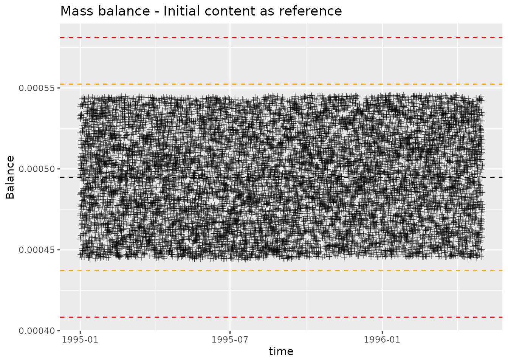

Mass balance
mass-balance.RmdWe are going to read a dlf file and then calculate, summarize and
plot mass balance. For this we will use the soil chemical log bundled
with daisyrVis.
data_dir <- system.file("extdata", package="daisyrVis")
path <- file.path(data_dir, "hourly/P2D-Daily-Soil_Chemical_110cm.dlf")
dlf <- read_dlf(path)
## We don't need timestamps for the mass balance calculation, but we need it for
## plotting later.
dlf <- daisy_time_to_timestamp(dlf)
names(dlf@data)
#> [1] "year" "month"
#> [3] "mday" "hour"
#> [5] "In_Matrix" "In_Biopores"
#> [7] "Leak_Matrix" "Leak_Biopores"
#> [9] "Biopores to matrix" "Matrix to biopores"
#> [11] "Tillage" "Drain_Soil"
#> [13] "Drain_Biopores" "Drain_Biopores_Indirect"
#> [15] "External" "Uptake"
#> [17] "Decompose" "Transform"
#> [19] "Content" "Biopores"
#> [21] "Error" "time"
nrow(dlf@data)
#> [1] 11665In order to do a mass balance calculation, we need to define which variables are input, output and content variables. In this case we use
input <- c("In_Matrix", "In_Biopores", "External", "Transform", "Tillage")
output <- c("Decompose", "Leak_Matrix", "Leak_Biopores", "Drain_Soil",
"Drain_Biopores", "Uptake")
content <- c("Content", "Biopores")Mass balance summary
We can use the function mass_balance_summary to
summarize the mass balance at the final timestep. The result is a list
containing the sum of each input and the total input; the sum of each
output and the total output; the value of each initial content and total
initial content; the value of each final content and total final
content; and the final balance calculation.
mbs <- mass_balance_summary(dlf, input, output, content)
mbs$Inputs
#> In_Matrix In_Biopores External Transform Tillage Total
#> 0.00000 0.00000 0.00000 68.19174 0.00000 68.19174
mbs$Outputs
#> Decompose Leak_Matrix Leak_Biopores Drain_Soil Drain_Biopores
#> 44.3881377 13.4851340 0.3371014 0.3095327 13.5879370
#> Uptake Total
#> 0.0000000 72.1078427
mbs$InitialContent
#> Content Biopores Total
#> 1 60.5101 9.80239e-19 60.5101
mbs$FinalContent
#> Content Biopores Total
#> 1 56.593 0.00147698 56.59448
mbs$Balance
#> Input Output InOutChange InitialContent FinalContent ContentChange
#> 1 68.19174 72.10784 3.916101 60.5101 56.59448 -3.915623
#> Balance
#> 1 0.0004779899Mass balance at each timestep
We can use the function mass_balance to calculate a mass
balance at each timestep. When calculating mass balance we can either
use the initial content as reference or get total mass
mb_ref <- mass_balance(dlf, input, output, content)
mb_total <- mass_balance(dlf, input, output, content, FALSE)mass_balance returns a Dlf object with a
mass balance calculation for each timestep
names(mb_ref@data)
#> [1] "year" "month"
#> [3] "mday" "hour"
#> [5] "In_Matrix" "In_Biopores"
#> [7] "Leak_Matrix" "Leak_Biopores"
#> [9] "Biopores to matrix" "Matrix to biopores"
#> [11] "Tillage" "Drain_Soil"
#> [13] "Drain_Biopores" "Drain_Biopores_Indirect"
#> [15] "External" "Uptake"
#> [17] "Decompose" "Transform"
#> [19] "Content" "Biopores"
#> [21] "Error" "time"
#> [23] "input_sum" "output_sum"
#> [25] "content_sum" "balance"
nrow(mb_ref@data)
#> [1] 11665Plotting mass balance
We can plot the mass balance calculation with
plot_mass_balance. This will produce a controlchart plot,
where each point is plotted alongside lines indicating mean, mean ± 2
standard deviations, mean ± 3 standard deviations. The point of the plot
is twofold, highlight points with large deviation and highlight
systematic change in deviations. We want to check that the magnitude of
deviations is acceptable, and that the distribution of deviations is
consistent over time.
plot_mass_balance(mb_ref, "time", " - Initial content as reference")
plot_mass_balance(mb_total, "time", " - Total content")